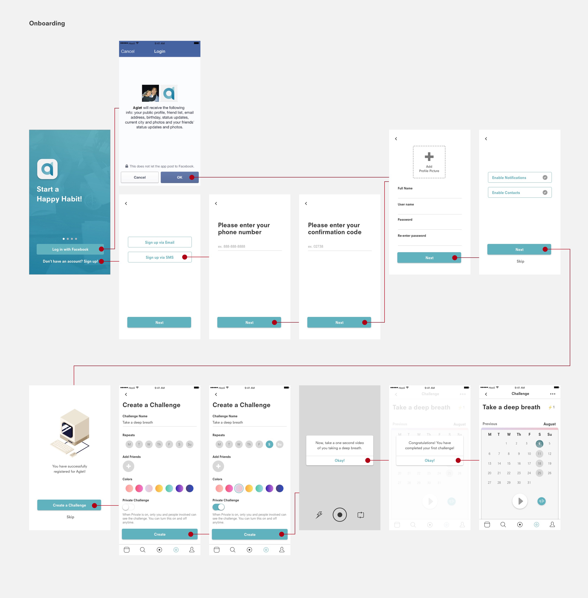
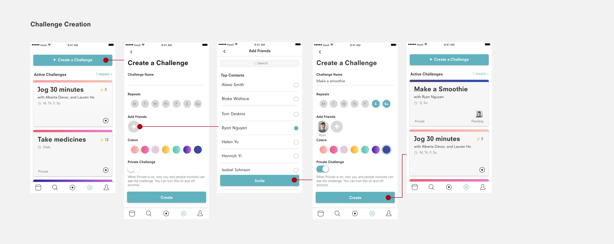
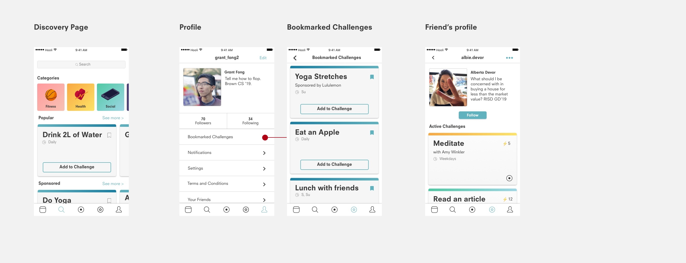

Aglet
This is a work-in-progress. Aglet is a student startup by engineers and designer from both Brown University and RISD. Aglet is an application aiming to create healthy habits through social accountability. Our app allows users to participate in streaks with friends, a streak of participation is rewarded with social points.
Team Members
Process
Research
Problem
According to the U.S. News, around 80% of New Year's resolutions fail within the second week of February. That said, research has shown the majority of people, especially the millenials, want to keep their resolutions. Unfortunately, all change requires some degree of emotional friction, which can cause people a lot of stress while maintaining their resolutions. Eventually, these people gave up the goals they set out for themselves. Our challenge: how do we turn this emotional friction into a postive thing and encourage people to form healthy habits?
Goal
During brainstorming for this project, it was clear we wanted to build something social media related that also had a net positive impact. From those motivations, we wanted to see if we could harness two of the most addictive things, mobile gaming and social media and redirect this toward something good.
Good habits are hard to make, so we wondered what what would happen if we took the two most ubiquitous habit forming products and make it easier to form healthy routines.
In addition, modern social media is incredibly superficial, short reward loops, which some argue is "destroying the social fabric of how society works". With a social network that is focused on real world action and individual relationships, and using proven short reward loops to create long term benefits, we hope to fix some of these issues. This focus on high engagement and taking real world actions also lends itself to be a possibly very powerful marketing platform to target millennials and gen-Z audiences.
Our team has past experience in different parts of core application. Lauren has done extensive market research about creating healthy habits during her time in B-Lab. Grant has worked with gamified systems and converting high engagement to monetary value.
We know there is a market from both a users' and marketers' perspective. This platforms allows users to connect much more deeply with their friends over social media, while also encouraging self improvement, which is a niche that still remains unfilled. Meanwhile from a marketer's perspective, there are entire industries around forming habits such as loyalty programs, and we are providing a new form factor to explore that industry.
Competitors
Below are a few companies that are in the same space, followed by an analysis of what they do and what we do differently.

My Challenge Tracker: An exercise tracker where you can challenge friends to workout. Developed as a tool for personal trainers and physical therapists to keep tabs on their clients.
Key Differences: Our app will be targeted towards friends challenging other friends, with a much larger reliance on social features to have users continue with their goals. We will also not directly be focused on exercise related goals.

Make Me: Allows members to engage in a social version of health tracking (mindfulness, meds, and exercise) where a group of people can mark down that they have participated in a healthy activity that day. They heavily push the use of the app for health clubs to keep tabs on members, and help employers encourage employees to be healthier.
Key Differences: While one can post images to a group, the social media aspect is not as core to the application, since a low engagement check off is all that is required. In addition, there is a heavy emphasis on negative reinforcement, with users losing money with every time they miss a day. Social media is core to our application as the main way of logging information, and we place a much larger emphasis on positive reinforcement (although buyin does play a role).
Achievement: A platform that compiles health data from various different tracking applications, and rewards you with cash prizes and discounts.
Key Differences: While we have a reward based structure at the end of challenges and use this to motivate users, this will only be one method that will be used to encourage users to finish their challenges. In addition, instead of tracking activity through other apps, we will be doing so using photo/video documentation.
Persona
With all of the research and findings, I synthesize the information and made a storyboard of the user's journey.
Illustrations by Naomi Wilkinson.
Ideation
Prototype
You and your friend would "prove" you completed the streak by sharing a one second video of you doing the activity. For example, if the streak was to run every day, you'd share a short video of you running. You and your friend do not have to complete the activity together (though you certainly could), but you both would submit your own videos of you doing the activity. Users would be able to view the progress of the streak with the different videos playing together on the same screen, or watch the videos in chronological order. The "streak" would end when you did not complete the activity within the given amount of time. You will also be able to view streaks that your friends were in with others in a "feed" view.


Work in Progress
Since this is a work in process, I will be updating the usability testing and revisions later!